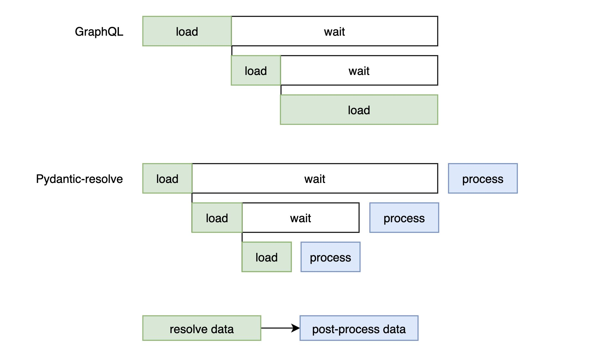

Introduction
Pydantic Resolve is a Pydantic based approach to construct complex data declaratively and progressively, without writing any imperative glue code.
Its best use case is building the view-model data needed by a UI. You can reuse most of your existing code (such as dataloaders), use it as a practical alternative to GraphQL, and get better performance and maintainability.
On top of Pydantic models, it adds resolve_* methods for on-demand data fetching, and post_* methods for post-processing the fetched data to match different business requirements.
Starting from Pydantic Resolve v2, it introduces ErDiagram, which lets you define an application-layer ER diagram. In a Relationship, you can set a default dataloader, which greatly reduces the amount of code needed to load related data.
It integrates well with many modern Python web frameworks, such as FastAPI, Litestar, and Django Ninja.
For FastAPI users, you can use FastAPI Voyager for a better developer experience. It visualizes complex schema relationships as an interactive graph you can click through. Check the Demo for a quick preview.
Installation
Since v1.11.0, the v1 line supports both Pydantic v1 and v2.
Starting from v2, it supports only Pydantic v2 and removes dataclass support. Other features remain backward-compatible.
Simple example
Here is a small code snippet.
Given tms.Team data, we reuse Team fields via inheritance, declare the extra fields sprints and members, and use resolve_sprints with a dataloader to define how to fetch the related data.
Finally, we use Resolver to walk the object graph and execute the configured logic.
The two dataloaders here are just simple batch queries internally.
from pydantic_resolve import Loader, Resolver
class Sample1TeamDetail(tms.Team):
sprints: list[Sample1SprintDetail] = []
def resolve_sprints(self, loader=Loader(spl.team_to_sprint_loader)):
return loader.load(self.id)
members: list[us.User] = []
def resolve_members(self, loader=Loader(ul.team_to_user_loader)):
return loader.load(self.id)
@route.get('/teams-with-detail', response_model=List[Sample1TeamDetail])
async def get_teams_with_detail(session: AsyncSession = Depends(db.get_session)):
teams = await tmq.get_teams(session)
teams = [Sample1TeamDetail.model_validate(t) for t in teams]
teams = await Resolver().resolve(teams)
return teams
Entity Relationship Diagram
ErDiagram (introduced in v2) is a powerful tool. It lets you define an application-layer Entity Relationship Diagram. In Relationship, you can specify a default dataloader to simplify the code needed to build related data.
Compared to a database-layer ERD, an application-layer ERD can be closer to the real business model, without worrying too much about database details.
It provides two ways to define the diagram. The first is a standalone definition: source code:
diagram = ErDiagram(
configs=[
Entity(
kls=Team,
relationships=[
Relationship( field='id', target_kls=list[Sprint], loader=sprint_loader.team_to_sprint_loader),
Relationship( field='id', target_kls=list[User], loader=user_loader.team_to_user_loader)
]
),
Entity(
kls=Sprint,
relationships=[
Relationship( field='id', target_kls=list[Story], loader=story_loader.sprint_to_story_loader)
]
),
Entity(
kls=Story,
relationships=[
Relationship( field='id', target_kls=list[Task], loader=task_loader.story_to_task_loader),
Relationship( field='owner_id', target_kls=User, loader=user_loader.user_batch_loader)
]
),
Entity(
kls=Task,
relationships=[
Relationship( field='owner_id', target_kls=User, loader=user_loader.user_batch_loader)
]
)
]
)
The second is to define it inside classes, similar to SQLAlchemy's declarative_base:
from pydantic_resolve import base_entity, Relationship
from task.schema import Task
BaseEntity = base_entity()
class Story(BaseModel, BaseEntity):
__pydantic_resolve_relationships__ = [
Relationship(field='id', target_kls=list[Task], loader=task_loader.story_to_task_loader)
]
id: int
name: str
diagram = BaseEntity.get_diagram()
In FastAPI Voyager,
ErDiagramcan be rendered:

After you define ErDiagram, you no longer need to write resolve_* methods and dataloader wiring for those relationships. You only need to declare which Relationship to load. Internally, it will auto-generate the resolve_* method and automatically call the dataloader.
# old
class Sample1TeamDetail(tms.Team):
sprints: list[Sample1SprintDetail] = []
def resolve_sprints(self, loader=Loader(spl.team_to_sprint_loader)):
return loader.load(self.id)
members: list[us.User] = []
def resolve_members(self, loader=Loader(ul.team_to_user_loader)):
return loader.load(self.id)
# new
from pydantic_resolve import LoadBy
class Sample1TeamDetail(tms.Team):
sprints: Annotated[list[Sample1SprintDetail], LoadBy('id')] = []
members: Annotated[list[us.User], LoadBy('id')] = []
It determines the unique Relationship and its loader based on the inheritance source, the LoadBy argument, and the annotated return type.
Define subsets and inheritance
Another key feature of Pydantic Resolve is defining data subsets via DefineSubset, similar to SQL SELECT or selecting fields in GraphQL.
from pydantic_resolve import DefineSubset
class MyStory(DefineSubset):
__subset__ = (Story, ('id'))
tasks: Annotated[list[Task], LoadBy('id')] = []
With this, MyStory is a class that selects only the id field from Story. Internally, it keeps private metadata to track the source type.
So the LoadBy declared in MyStory will eventually trace back to Story, then find the corresponding Relationship defined under Story.
If you want the full set of fields, you can simply inherit from the base model:
Build complex data in three steps
Using an agile-style domain model with Story, Task, and User as examples, this section shows how Pydantic Resolve can build various business-specific data compositions with minimal code.
1. Define entities and relationships
Create the base entities and their relationships based on your domain model.
In Pydantic Resolve, a dataloader is the default implementation for Relationship.
from pydantic import BaseModel
class Story(BaseModel):
id: int
name: str
owner_id: int
sprint_id: int
model_config = ConfigDict(from_attributes=True)
class Task(BaseModel):
id: int
name: str
owner_id: int
story_id: int
estimate: int
model_config = ConfigDict(from_attributes=True)
class User(BaseModel):
id: int
name: str
level: str
model_config = ConfigDict(from_attributes=True)
Define the dataloader implementation. The function only needs to be async and accept a list as input. In this example, we split out utility functions so we can inject a session for unit tests.
from .model import Task
from sqlalchemy.ext.asyncio import AsyncSession
from sqlalchemy import select
import src.db as db
from pydantic_resolve import build_list
# --------- user_id -> user ----------
async def batch_get_users_by_ids(session: AsyncSession, user_ids: list[int]):
users = (await session.execute(select(User).where(User.id.in_(user_ids)))).scalars().all()
return users
async def user_batch_loader(user_ids: list[int]):
async with db.async_session() as session:
users = await batch_get_users_by_ids(session, user_ids)
return build_object(users, user_ids, lambda u: u.id)
# ---------- task id -> task ------------
async def batch_get_tasks_by_ids(session: AsyncSession, story_ids: list[int]):
users = (await session.execute(select(Task).where(Task.story_id.in_(story_ids)))).scalars().all()
return users
async def story_to_task_loader(story_ids: list[int]):
async with db.async_session() as session:
tasks = await batch_get_tasks_by_ids(session, story_ids)
return build_list(tasks, story_ids, lambda u: u.story_id)
Then define the ER diagram via an explicit declaration.
diagram = ErDiagram(
configs=[
ErConfig(
kls=Story,
relationships=[
Relationship( field='id', target_kls=list[Task], loader=task_loader.story_to_task_loader),
Relationship( field='owner_id', target_kls=User, loader=user_loader.user_batch_loader)
]
),
ErConfig(
kls=Task,
relationships=[
Relationship(field='owner_id', target_kls=User, loader=user_loader.user_batch_loader)
]
)
]
)
config_global_resolver(diagram) # 重要： 将 ER diagram 信息注入到 Resolver 中
Now the setup is complete.
By the way, dataloader is just the default implementation. Under the hood, your loader can be an RPC call, a local file lookup, or a database query—callers don't need to care.
Also, if you are using ORM relationships, you can remove the loader config in Relationship, and remove LoadBy (or your resolve_* methods), then use ORM-provided composed data instead.
2. Build data for business needs
Use simple inheritance and add fields to describe the data structure required by your business.
In this stage, we fetch the required source data first. In stage 3, we'll adjust and transform it further.
class Task(BaseTask):
user: Optional[BaseUser] = None
def resolve_user(self, loader=Loader(user_batch_loader)):
return loader.load(self.owner_id) if self.owner_id else None
class Story(BaseStory):
tasks: list[Task] = []
def resolve_tasks(self, loader=Loader(story_to_task_loader)):
return loader.load(self.id)
assignee: Optional[BaseUser] = None
def resolve_assignee(self, loader=Loader(user_batch_loader)):
return loader.load(self.owner_id) if self.owner_id else None
If ErDiagram is available, the code can be further simplified:
class Task(BaseTask):
user: Annotated[Optional[BaseUser], LoadBy('owner_id')] = None
class Story(BaseStory):
tasks: Annotated[list[Task], LoadBy('id')] = []
assignee: Annotated[Optional[BaseUser], LoadBy('owner_id')] = None
The DefineSubset metaclass can quickly create subset types by listing the fields you want:
class Story1(DefineSubset):
# define the base class and fields wanted
__subset__ = (BaseStory, ('id', 'name', 'owner_id'))
tasks: Annotated[list[Task1], LoadBy('id')] = []
assignee: Annotated[Optional[BaseUser], LoadBy('owner_id')] = None
3. Adjust data for UI details
The data you build in stage 2 often is not directly ready for UI display. Many details require a second pass over the composed data, for example:
- Task names need a prefix from their parent Story name
- A Story needs the total estimate of all its Tasks
- A Story needs to collect all developers involved across its Tasks
In Pydantic Resolve, these can be done with post_* methods immediately, without an extra traversal.
From a lifecycle perspective, a Pydantic model's post_* methods run only after all resolve_* methods have finished. So from a post_* method, all resolved data is already ready.
In other words, post_* is a hook provided during traversal, and you can use it to perform all kinds of operations after data fetching.
Let's explain using the three cases above.
#1: A node exposes its fields to all descendants
Task names need a prefix from their parent Story name
view in voyager, double click Story3
By defining __pydantic_resolve_expose__, you can expose the current model's field data to descendant nodes.
__pydantic_resolve_expose__ = { 'name': 'story_name' }
Note: the key (name) is the field name, and the value (story_name) is an alias used by descendants to look up the value. This alias must be “globally” unique within the whole tree rooted at Story.
Descendants can read the value via ancestor_context['story_name'].
# post case 1
class Task3(BaseTask):
user: Annotated[Optional[BaseUser], LoadBy('owner_id')] = None
fullname: str = ''
def post_fullname(self, ancestor_context): # Access story.name from parent context
return f'{ancestor_context["story_name"]} - {self.name}'
class Story3(DefineSubset):
__subset__ = (BaseStory, ('id', 'name', 'owner_id'))
__pydantic_resolve_expose__ = {'name': 'story_name'}
tasks: Annotated[list[Task3], LoadBy('id')] = []
assignee: Annotated[Optional[BaseUser], LoadBy('owner_id')] = None
#2: Compute extra fields from resolved data
How to compute the total estimate of all tasks in each story?
view in voyager, double click Story2
Because post_* runs after resolve_*, this is straightforward—just sum it.
class Task2(BaseTask):
user: Annotated[Optional[BaseUser], LoadBy('owner_id')] = None
class Story2(DefineSubset):
__subset__ = (BaseStory, ('id', 'name', 'owner_id'))
tasks: Annotated[list[Task2], LoadBy('id')] = []
assignee: Annotated[Optional[BaseUser], LoadBy('owner_id')] = None
total_estimate: int = 0
def post_total_estimate(self):
return sum(task.estimate for task in self.tasks)
#3: An ancestor collects data from descendants
A story needs to collect all developers involved across its tasks
view in voyager, double click Task1, and view source code
To implement collection, define a Collector in an ancestor node. Similar to expose, all descendants can send data to that Collector.
Then read the results via collector.values().
Unlike expose, the alias inside a Collector does not need to be “globally” unique. Collectors with the same alias are scoped by the ancestor/descendant relationship.
In descendant nodes, __pydantic_resolve_collect__ = {'user': 'related_users'} declares that it will send user to the ancestor collector named related_users.
__pydantic_resolve_collect__ supports many forms:
__pydantic_resolve_collect__ = {'user': 'related_users'}: send user to related_users
__pydantic_resolve_collect__ = {('id', 'user'): 'related_users'}: send user, id to related users
__pydantic_resolve_collect__ = {('id', 'user'): ('related_users', 'all_users')}: send user, id to related_users and all_users
The default Collector provided by Pydantic Resolve collects values into a list. You can also implement ICollector to build custom collectors for your own subset needs.
For more details, view this page
Here is the complete code. related_users will collect all user values. (Note: this example does not deduplicate.)
class Task1(BaseTask):
__pydantic_resolve_collect__ = {'user': 'related_users'} # Propagate user to collector: 'related_users'
user: Annotated[Optional[BaseUser], LoadBy('owner_id')] = None
class Story1(DefineSubset):
__subset__ = (BaseStory, ('id', 'name', 'owner_id'))
tasks: Annotated[list[Task1], LoadBy('id')] = []
assignee: Annotated[Optional[BaseUser], LoadBy('owner_id')] = None
related_users: list[BaseUser] = []
def post_related_users(self, collector=Collector(alias='related_users')):
return collector.values()
4. Execute
Pydantic Resolve provides Resolver().resolve(data) as the entry point.
First, provide data of type Story. Then Resolver will execute your configured logic to fetch and transform data.
from pydantic_resolve import Resolver
stories = [Story(**s) for s in await query_stories()]
data = await Resolver().resolve(stories)
How it works
Inside Resolver().resolve(data), it first extracts type information from data, then recursively analyzes all traversal paths and methods to run.
After collecting the meta information, the execution is similar to a breadth-first traversal. Within each node, it still enforces the execution order between resolve_* and post_*.
If we compare it with GraphQL, you'll find they are very similar: both use resolvers to fetch data, and both use dataloaders to solve N+1 queries.
The biggest difference is post_* methods, and the data post-processing capabilities built around them.
Also, because from the perspective of post_*, all resolved data is already ready, optimizations in the resolve_* stage do not affect post_* operations.
For example, if you use ORM relationship selectinload to preload tasks, you only need to remove the resolve_* methods related to tasks, and all post_* logic will still work.
Here is a comparison of the execution flow between Pydantic Resolve and GraphQL:

Because Pydantic can directly initialize nested data (for example, when the ORM returns fully composed objects), you can also run only post_*.

Internally, Expose and Collector are implemented with contextvars to isolate data at the scope level.